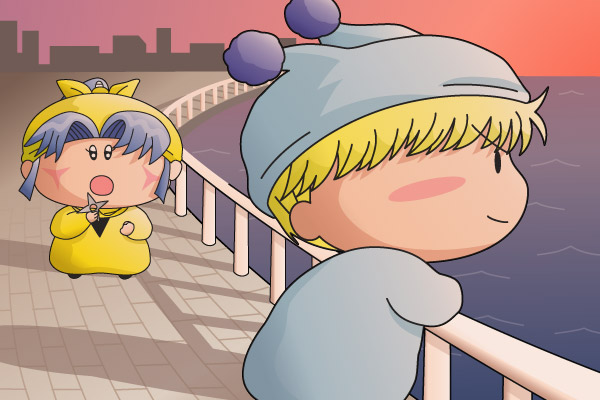

最近ヤマネが修行場にしている海岸通りへ行ってみると、そこでは今日もミルモが海を眺めていた。
ヤマネ「ミルモ殿はいつもここにいらっしゃるのでございますか？」
ミルモ「…あぁ」
ミルモはヤマネの方へ振り返らず、海を眺め続けていた。
ここでミルモに出会えたのも２回目ということからか、ヤマネの口から自然と自分の悩みがこぼれるのであった。
ヤマネ「私…、知らないうちに兄様に傷を負わせてしまいました」
ミルモ「…そうか」
ヤマネ「お菓子を食べると、その後の記憶がなくなってしまうのでございます」
ミルモ「それは宿命というものだな」
ヤマネ「…えっ…」
ミルモ「宿命は変えることはできない。生まれたときにその妖精(ひと)の宿命は決まってしまうからだ」
ヤマネ「そんな…」
ヤマネの瞳に涙が溢れる。
ヤマネ「私がいくらがんばっても、兄様は私のせいでこれからもつらい思いを…」
ミルモ「生まれ変わればいい」
ヤマネ「……生まれ変わる、でございますか！？」
困惑しているヤマネの方へミルモが振り返る。
ミルモ「そうだ。生まれ変われば宿命は変えられる」
ヤマネ「生まれ変わるとはどのように、でございましょうか？」
ミルモ「好きな相手の前で、もっともっとお菓子を食べるといい。生まれ変わるとはそういうことだ」
ヤマネ「ご教授いただきありがとうございます！！このご恩はヤマネ一生忘れないでございます」
うれしそうに走っていったヤマネを見届けた後、ミルモは再び海の方へ体を向けた。
先ほどよりも、空と海は暗くなっていた。
ミルモ「にょほほー。ヤシチも大変だなぁ」
（↑ミルモ口調でどうぞ）
最近ですが、この冬のドラマ「砂の器」にハマっていまして、ドラマのあるシーンをこの度ミルモ風におこしてみました。こんなにミルモってカッコよかったっけ！？と思うほどに、夕焼けが似合う男になっちゃいました(^^)。切なさの溢れるドラマのストーリーまではミルモ風にすることはできませんでしたが(笑)。果たして次回作はあるのかないのか。。
完成までトータル５～６時間はかかっていたりします。個人的に今回は背景をがんばってみたのですが、私の限界はここまでです。全体的に絵を夕焼け色に染めるのもひと苦労でした(^◇^;)。
(2004/2/24)